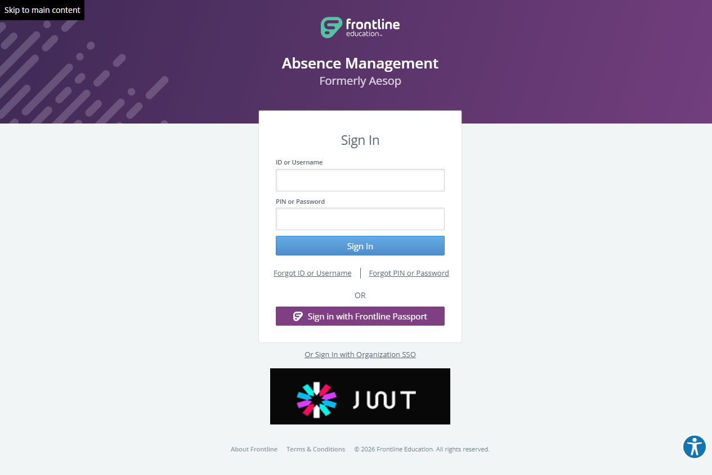

Execution 15 · Logout Navigation Matrix
tests/logout/logout-navigation-matrix.md · Video 16:51–21:22
15
Execution
16:51–21:22
Continuous-video range
Unattended safe mode
Execution mode
Scenario outcome
Logout succeeded independently from React Home, Angular Daily Report, classic Import Data, and Employee maintenance. Each flow returned to Stage Sign In; Back and direct protected-route checks did not restore authenticated content. Optional multi-tab invalidation was not tested.
Continuous video evidence
Screenshot evidence
{kind=link}

Complete test structure
Source: tests/logout/logout-navigation-matrix.md
# AES Logout Navigation Matrix ## Execution directive Before any browser action, read completely: 1. `instructions/project-instructions.md` 2. `instructions/application-details.md` 3. `instructions/test-data.md` 4. `config/aes-stage.json` Execute all flows directly in Chrome through Playwright MCP. Do not generate Playwright, TypeScript, or reusable browser-automation source code. Each flow is independent and must begin with a fresh authenticated session. Read the Stage URL and username from `config/aes-stage.json`. Resolve the password using `AES_STAGE_PASSWORD` first; when it is unavailable, read `password` from `.secrets/aes-stage.credentials.json`. Never print, display, log, report, screenshot, or copy the resolved password. Do not pause for routine confirmation or password entry. If neither source is available or the local value is still a placeholder, mark all flows **BLOCKED**, generate the HTML report, and stop before opening the browser. Generate one standalone HTML execution report: `reports/logout/logout-navigation-matrix/logout-navigation-matrix-<YYYYMMDD-HHMMSS>.html` Create the report directory when it does not exist. Keep execution results out of this scenario file. ## Scope and approved routes - AES Stage entry point: the URL in `config/aes-stage.json` (currently `https://aesstage.flqa.net`) - Approved authentication host: `https://idgatewayawsstage.flqa.net` - Approved Angular Stage host: `https://adminwebstage2.flqa.net` - React Home route: `/navigator/Dashboard.aspx` - Angular Daily Report route: `/reports/absence/daily-report` - Classic Import Data route in the current build: `/mvc.aspx/dataimport` - Employee maintenance is reached through `Master Data` → `Employee` → `General Information`. Record the actual current route. Earlier Stage observations used `/navigator/te_select.asp` and `/navigator/te_general.asp`; do not falsely label the flow as MVC or fail solely because the implementation is ASP rather than MVC. - Logout may be labelled `Logout`, `Log Out`, or `Sign Out`. Use only the visible logout action in the authenticated user/account menu. - A redirect to the approved authentication host after logout is expected. ## Safety rules - Do not change records, settings, filters, imports, or employee data. - Do not use application-switching, organization-switching, SSO, forgot-password, or profile-management actions. - Do not inspect cookies, browser storage, tokens, or authentication fragments. - Do not include the password or sensitive redirect query values in screenshots or reports. - Capture the protected page route before logout, but remove query strings or authentication fragments from report output when they are not needed. - After logout, do not re-enter credentials until the current flow's logout and session-termination checks are complete. ## Shared authentication checks Run these checks at the beginning of every flow: 1. Open `https://aesstage.flqa.net`. - Expected: The approved login page displays visible username and password fields, or an existing authenticated session safely reaches React Home. 2. If the login page is displayed, enter the configured username and runtime password, then select Sign In once. - Expected: Authentication succeeds without exposing credentials. 3. Confirm React Web Navigator Home is available. - Expected: The authenticated account control, global Search, `Daily Report`, `Master Data`, and `Extract / Import` are visible. ## Shared logout action Use these steps from the destination page in each flow: 1. Confirm the authenticated user/account control is visible and enabled. 2. Open the user/account menu. - Expected: The menu opens without an application error and contains a visible enabled `Logout`, `Log Out`, or `Sign Out` action. 3. Close the menu with Escape or by safely moving focus away, then open it again. - Expected: The menu can be dismissed and reopened; the logout action remains interactive. 4. Record the current protected route without sensitive query data. 5. Select the visible logout action once. - Expected: The authenticated application closes and navigation reaches the approved login experience. 6. Confirm logout completion. - Expected: Username and password fields are visible, authenticated navigation and the account menu are absent, and no application error appears. ## Shared session-termination checks Run these checks immediately after every logout: 1. Use browser Back once and wait for the page to settle. - Expected: Previously authenticated page content is not restored as an active usable session. The browser remains at login or redirects back to login. 2. Navigate directly to the protected route recorded before logout. - Expected: The request is redirected to the approved login page; protected content is not usable. 3. Confirm the previous account menu and authenticated navigation are unavailable. - Expected: No authenticated controls remain interactive. 4. Confirm the login page remains responsive. - Expected: Username, password, Sign In, and approved recovery links are visible and operable. ## Flow 1 — Logout from React Home 1. Complete the shared authentication checks. 2. Confirm React Home is displayed at `/navigator/Dashboard.aspx`. 3. Confirm global Search and primary navigation are visible and enabled. 4. Run the shared logout action. 5. Run the shared session-termination checks against the React Home route. Expected flow outcome: logout succeeds from React Home, the login page is displayed, and React Home cannot be restored without authenticating again. ## Flow 2 — Logout from Angular Daily Report 1. Complete the shared authentication checks. 2. Select `Daily Report` and wait for Angular navigation to finish. 3. Confirm `/reports/absence/daily-report`, the `Daily Report` heading, report filters, and the authenticated account control are visible. 4. Confirm the account menu can open above the Angular page without blocking or breaking report controls. 5. Run the shared logout action. 6. Run the shared session-termination checks against the Angular Daily Report route. Expected flow outcome: logout succeeds from Angular Daily Report, the login page is displayed, and the Angular route cannot be restored without authenticating again. ## Flow 3 — Logout from classic Import Data 1. Complete the shared authentication checks. 2. Navigate through `Extract / Import` → `Import Data`. 3. Confirm `/mvc.aspx/dataimport`, `Upload Files`, Object Type, Status Summary, Add File, and Next are visible. 4. Confirm the authenticated account control remains visible and enabled above the classic/MVC content. 5. Run the shared logout action without selecting a file or starting an import. 6. Run the shared session-termination checks against the Import Data route. Expected flow outcome: logout succeeds from Import Data, the login page is displayed, and Import Data cannot be restored without authenticating again. ## Flow 4 — Logout from Employee maintenance 1. Complete the shared authentication checks. 2. Navigate through `Master Data` → `Employee` → `General Information`. 3. Confirm Employee General Information and `Add Employee` are visible. 4. Record the actual employee route and implementation type shown by the current Stage build. 5. Confirm the authenticated account control remains visible and enabled above the employee page. 6. Run the shared logout action without opening or changing an employee record. 7. Run the shared session-termination checks against the recorded employee route. Expected flow outcome: logout succeeds from Employee maintenance, the login page is displayed, and the Employee page cannot be restored without authenticating again. ## Additional session-security scenarios ### Account-menu consistency 1. Compare the user/account menu on React Home, Angular Daily Report, Import Data, and Employee maintenance. 2. Record the visible logout label and whether the action is enabled on every page. Expected: the same authenticated identity and a usable logout action are available across all four application implementations. ### Direct protected-route access after logout 1. After each logout, open the exact protected route from that flow with unnecessary query data removed. 2. Wait for all redirects to complete. Expected: all four protected routes require authentication and none display usable protected content. ### Re-authentication isolation 1. Complete a flow's logout and session-termination checks. 2. Authenticate again only when starting the next independent flow. 3. Confirm the new session begins on React Home rather than unexpectedly restoring the previous flow's page or unsaved state. Expected: each new login creates a clean authenticated session with no persisted unsaved input or stale destination state. ### Optional multi-tab invalidation Run only if Chrome safely supports two controlled tabs in the same authenticated session: 1. Keep React Home open in one controlled tab and the selected destination open in another. 2. Logout from the destination tab. 3. Return to the React Home tab and attempt a safe page refresh. Expected: the second tab no longer has an authenticated usable session and redirects to login. If safe multi-tab control is unavailable, mark only this optional case **NOT TESTED**; do not block the four required flows. ## Result classification - **PASS:** The destination is confirmed, logout reaches the approved login page, Back does not restore an authenticated session, and direct protected-route access requires authentication. - **FAIL:** Logout does not complete, authenticated controls remain usable, protected content is restored, a route bypasses authentication, or an application error appears. - **BLOCKED:** Authentication, permissions, missing logout controls, unavailable browser behavior, or safety restrictions prevent a required flow. - **NOT TESTED:** Use only for the optional multi-tab case when safe execution is unavailable. The overall report is **PASS** only when all four required flows pass. An optional case marked **NOT TESTED** does not fail the overall report. ## HTML reporting requirements The report must be polished, standalone, responsive, printable, and require no external dependencies. Include: - Overall status - Total required flows - Flows passed - Flows failed - Flows blocked - Separate detailed-check totals for Pass, Fail, Blocked, and Not Tested - Start and finish times and approved environment hosts - A prominent **Scenario outcomes** section with one card per required flow - Detailed step table with action, expected result, actual result, and status - Route and implementation observations - Account-menu consistency results - Session-termination and direct-route results - Optional multi-tab result when executed - Safety and cleanup summary - A separate failure section with numbered reproduction steps for every failed flow Every Scenario outcomes card must contain: 1. Flow number and full name 2. Short actual-result summary 3. Prominent **PASS**, **FAIL**, or **BLOCKED** status Example: > **1 · Logout from React Home** > > Logout reached the approved login page; Back and direct Dashboard access did not restore the authenticated session. > > **PASS** Never include passwords, tokens, cookies, sensitive redirect fragments, or other secrets in the report. ## One-line invocation After either `AES_STAGE_PASSWORD` or `.secrets/aes-stage.credentials.json` is configured securely, run: `Execute tests/logout/logout-navigation-matrix.md`
Safety and cleanup
No password, token, cookie, or authentication fragment is included. Unattended safe mode did not create, update, or delete persistent staging records.